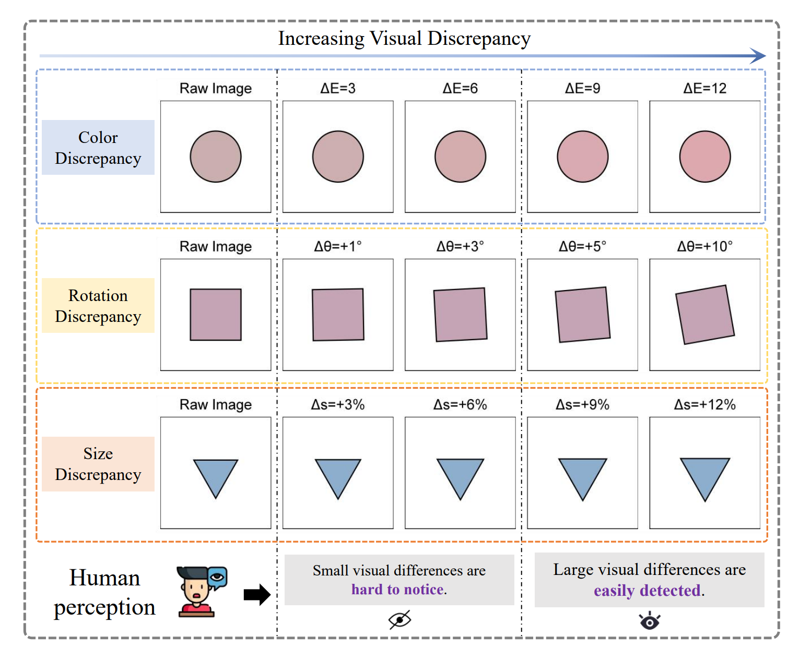
MLLMs have demonstrated strong capabilities in many vision-language tasks. However, their ability to detect fine-grained visual discrepancies remains underexplored. We introduce OddGridBench, a controllable benchmark for evaluating visual discrepancy sensitivity in MLLMs. The benchmark contains over 1,400 grid-based images where a single element differs from others in attributes such as color, size, rotation, or position. Experiments reveal that even state-of-the-art MLLMs perform significantly below human performance in detecting subtle visual discrepancies. To address this limitation, we further propose OddGrid-GRPO, a reinforcement learning framework integrating curriculum learning and distance-aware reward design to improve perceptual discrimination.
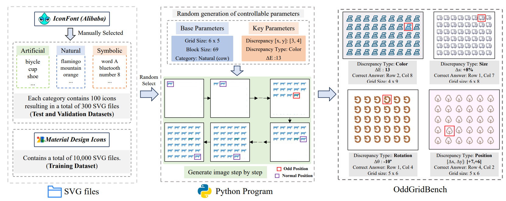
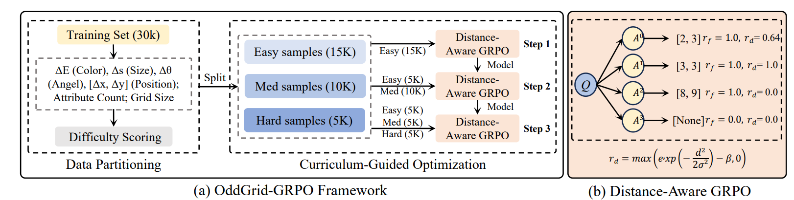
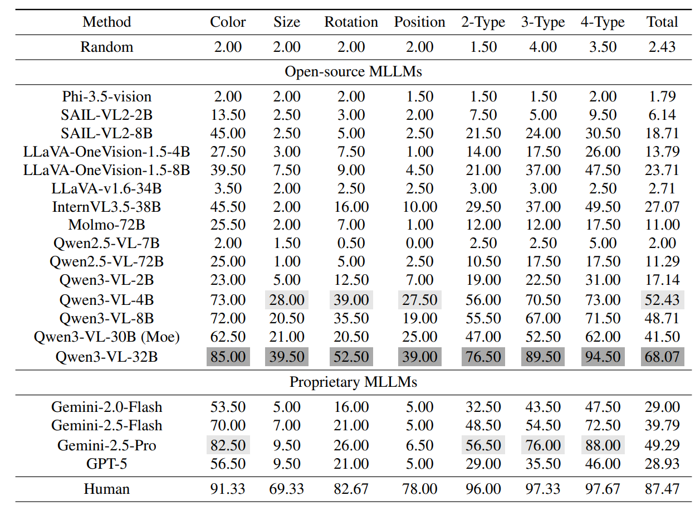
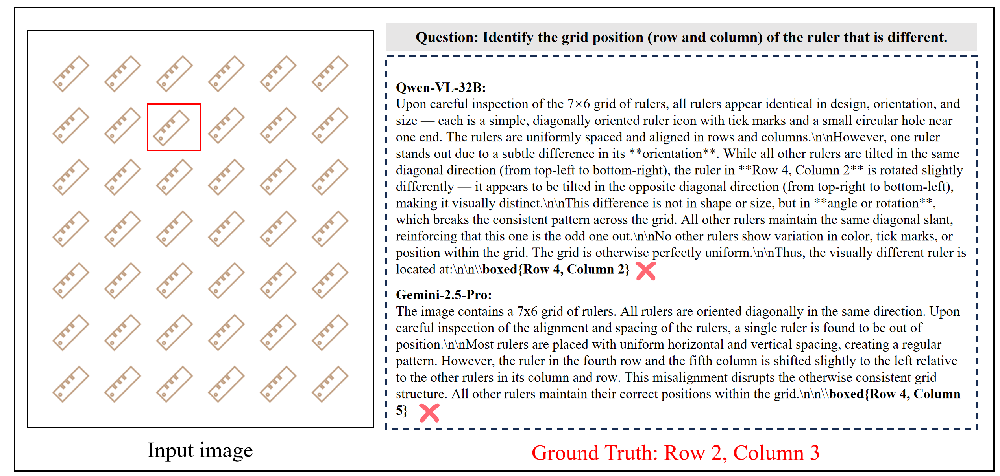
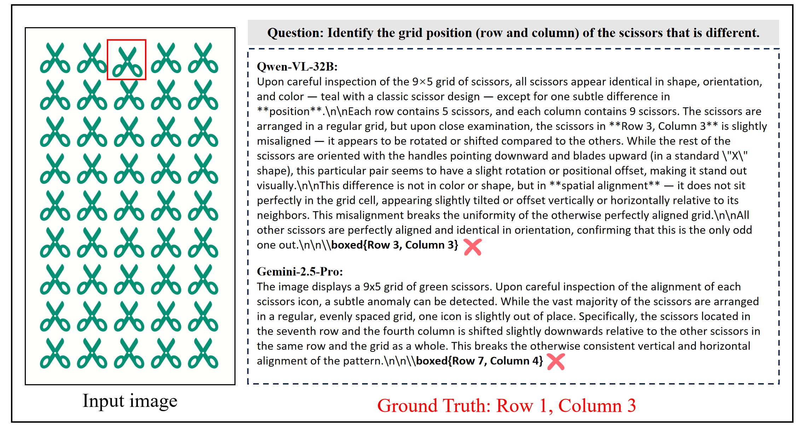
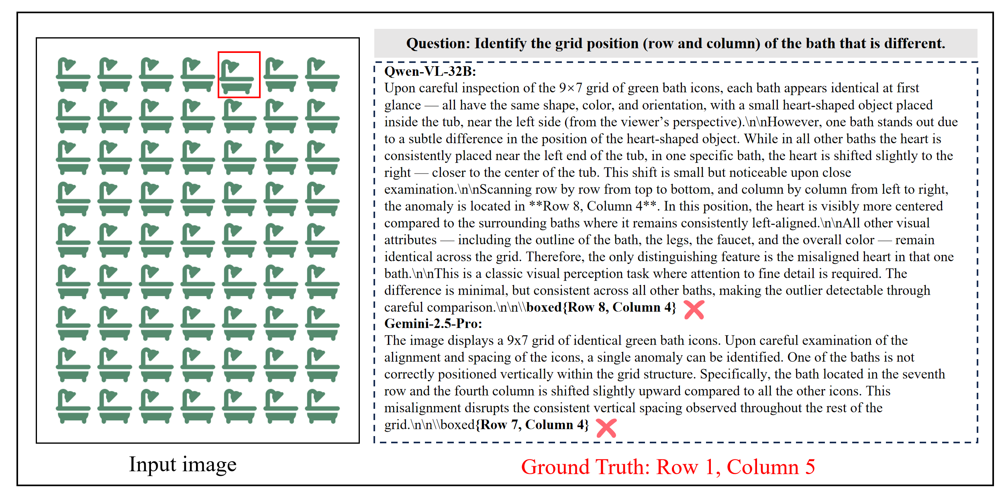
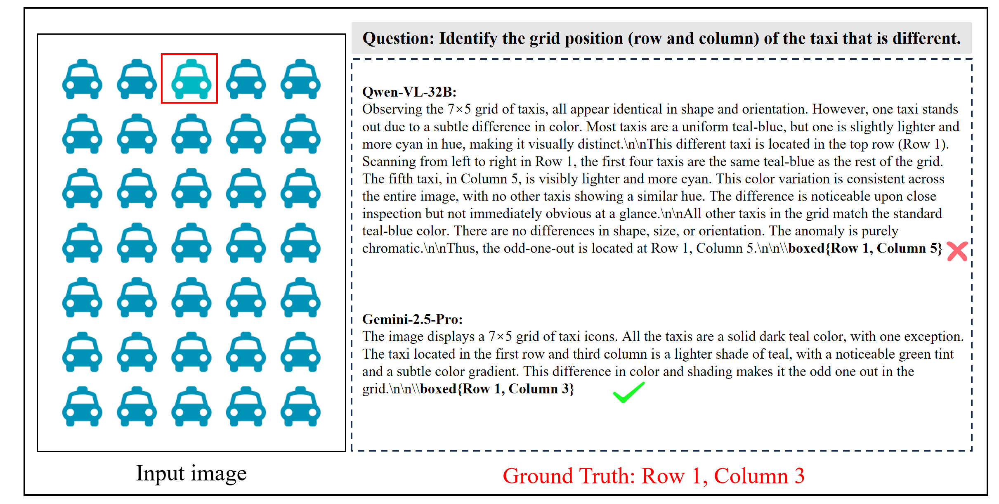
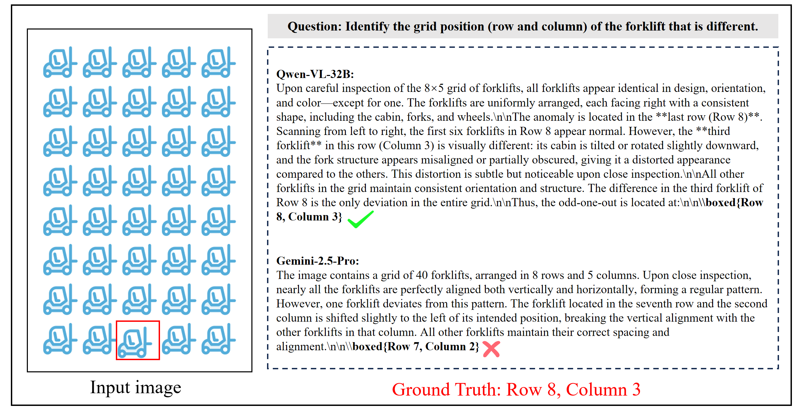
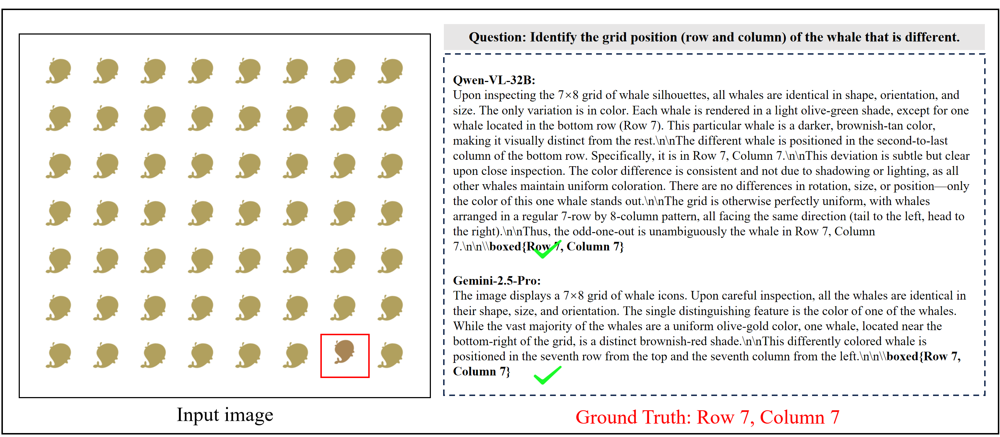
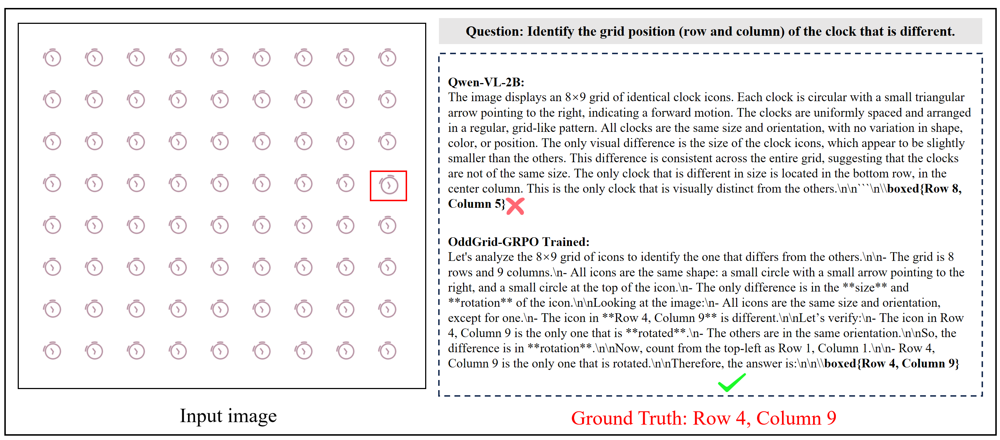
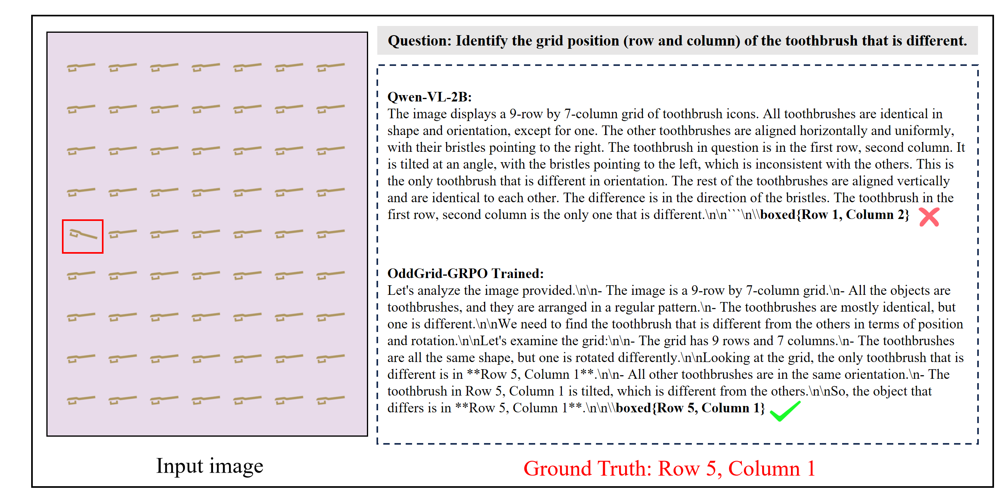
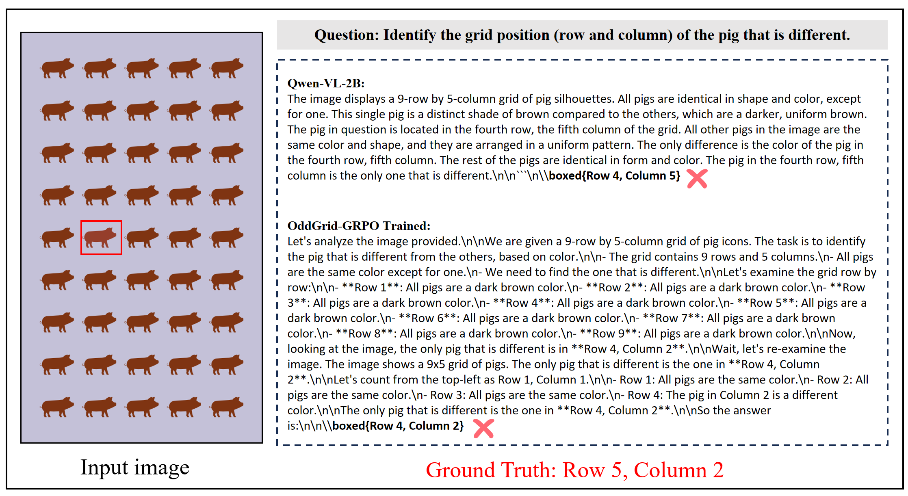
@inproceedings{weng2025visnumbench, title={VisNumBench: Evaluating Number Sense of Multimodal Large Language Models}, author={Tengjin Weng and Wenhao Jiang and Jingyi Wang and Zhong Ming}, booktitle={Proceedings of the IEEE/CVF International Conference on Computer Vision (ICCV)}, year={2025} }